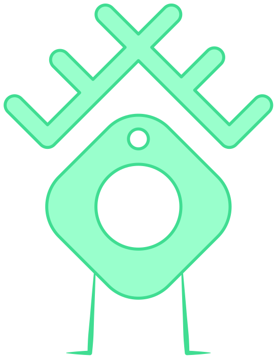

Finding your followers
Using our Experiential Method, we will research your brand to identify and attract the right followers for you. Firstly we find what your brand offers, and who your main competitors are. Then we look into your desired audience - who they are, where they are, what they love, and what they need. Our aim is to assist you in attracting followers who are likely to become customers.
